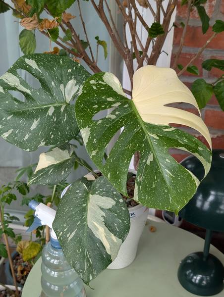
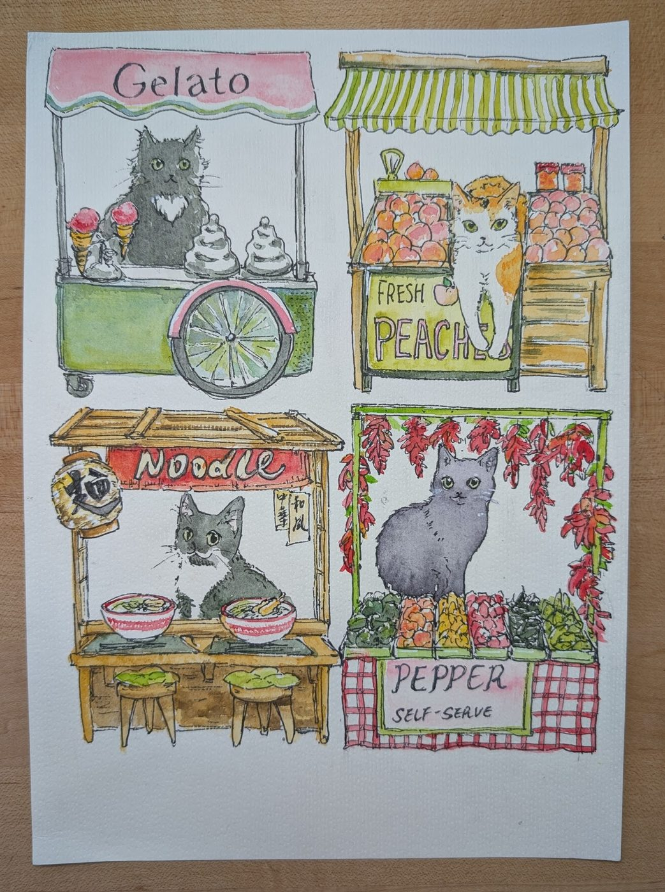

Epicurean Adventures
Plants on every sill, a bar with its own sign, paintings of cats — and the cats themselves.


 everything here is made under close supervision
everything here is made under close supervision
 Peaches
the permanent collection
A museum wall for the household calico: gilt frames, placards, and works in the artist's hand.
visit the gallery
Peaches
the permanent collection
A museum wall for the household calico: gilt frames, placards, and works in the artist's hand.
visit the gallery

Our Plants the indoor jungle, 62 strong Every plant with a growing photo timeline, care needs, and an ASPCA cat-safety badge. all plants cat-safe only succulents Spencer's Bar
the house drinks ledger
Beers and spirits we've tried, with tasting notes, brewery marks, and label photos.
all drinks
beer
spirits
Spencer's Bar
the house drinks ledger
Beers and spirits we've tried, with tasting notes, brewery marks, and label photos.
all drinks
beer
spirits

Projects things made by hand Watercolors, painted miniatures, and a digital painting series starring Niuniu. watercolors warhammer digital paintings
About Us
the humans & the management
Spencer, Yunyi, and the three cats who supervise it all: Pookah, Niuniu, and Peaches.
meet everyone